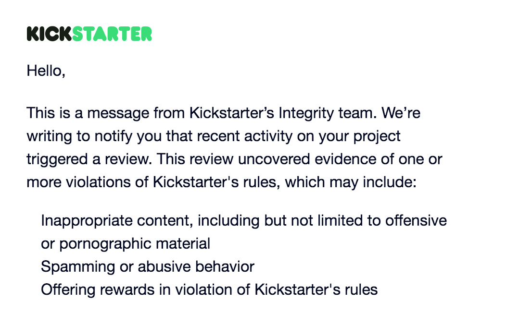
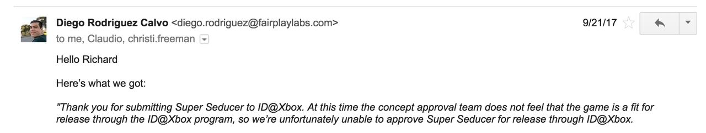
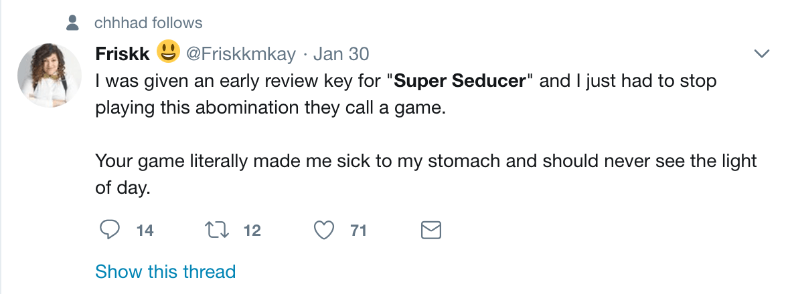
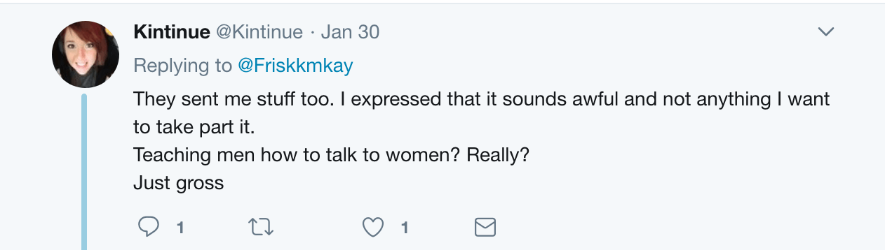
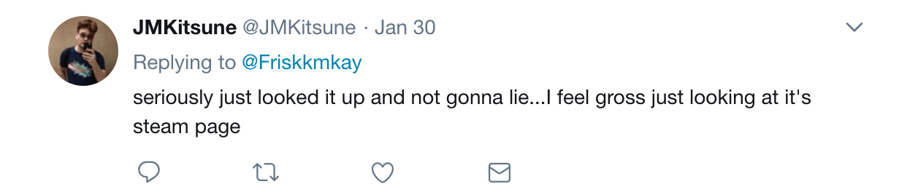
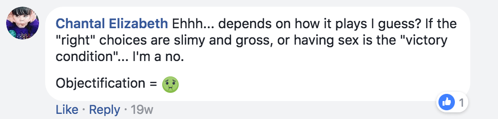
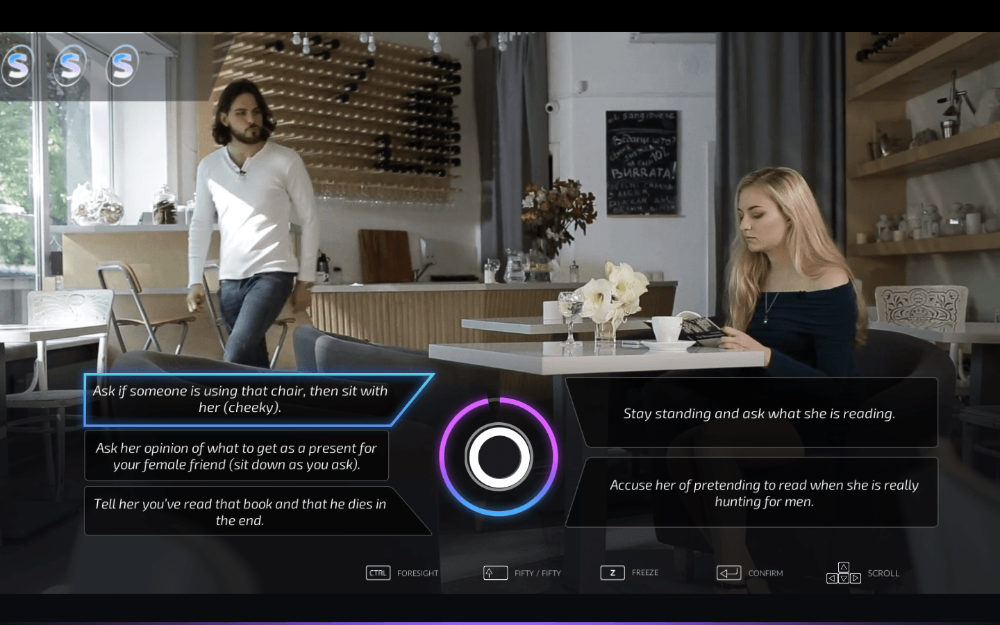

Sponsored Article is ROK's official account that publishes sponsored articles from advertisers. If you are interested hiring a sponsored article for your site, product, or service, visit our advertising page.


The following article is sponsored by Super Seducer.
At Return of Kings, we generally don’t encourage men to play video games, because staying huddled in your room for hours at a time pressing buttons or clicking on your computer screen won’t get you laid, improve your health, or fatten your bank account. But what if there was a game that had positive benefits for your real life? What if there was a game that could help you become better with women?
That game now exists, and it’s called Super Seducer.
Created by veteran PUA instructor Richard La Ruina, Super Seducer is a soon-to-be-released game that is fun to play and teaches you the fundamentals of game and how to pick up girls. As you would expect, it’s a game that has feminists and their soy boy handlers infuriated, and they’ve been leading a campaign to keep the game off of Steam and other distribution outlets.
Here’s why Super Seducer is worth your time…

Despite Super Seducer being an innocuous game about teaching men how to become better women—the game doesn’t have nudity or pornographic content in it—it has the game industry and feminists in a tizzy. The problems began back in September, when the Kickstarter for Super Seducer was shut down due to inappropriate content:

Feminists have also blocked the game from being released on the Xbox Games Store:

Much of the gaming media has also been upset over Super Seducer. According to the company, PC Gamer’s editor asked Super Seducer’s PR company to remove him from their mailing list, and feminist game reviewers have been denouncing the game on social media:




There have also been attempts to get the game removed from Steam and the PlayStation Network, though neither have succeeded thus far. The game has also started getting positive press from some sectors of the gaming media, who are interested in its unique premise and content.
The reaction to Super Seducer shouldn’t be too surprising to any reader of Return of Kings, but it’s still jaw-dropping. In a world in which everyone from politicians to media moguls have been exposed as sexually exploiting women, you’d figure that people would appreciate something that teaches men how to be suave, sexy, and give women what they want.
But feminists are allergic to game and any methods of masculine self-improvement beyond meaningless tripe like “just be yourself.” Feminists don’t actually care about the well-being of women, because if they did, they’d support a game like Super Seducer that instructs men to become the kind of guy that women wish they could have.
Super Seducer is a game designed to replicate the experience of seducing women as thoroughly and accurately as possible. Richard La Ruina is a world-renowned seduction instructor with over a decade of experience in picking up women and teaching his skills to men, and he’s used that experience to make Super Seducer the most realistic game of its type out there. This sets it apart from the hordes of dating simulators already on the market.
Structured as a hybrid of RPG, adventure game, and FMV game, Super Seducer puts you in the role of an average man (played by La Ruina himself) who is tasked with meeting, going on dates, and ultimately sealing the deal with a number of different women. The meat of the game is its dialogue system, where you are tasked with coming with the most appropriate response in the situation you’re in, whether you’re coming up to girls on the street or dancing with them in a club.
Super Seducer provides a number of different responses in each situation, from creepy stuff that will get your character slapped across the face (or worse), to “beta” responses to will get you friendzoned, to suave, charismatic responses that will get the girl interested in you. After each dialogue choice, La Ruina will appear to explain to you what you got right, what you got wrong (if anything), and how you can improve, allowing less experienced guys to recognize the flaws in their game.

While Super Seducer is certainly fun to play—La Ruina and his fellow actors do a good job, and some of the scenarios/dialogue choices are hilarious—the game’s real value is in providing a risk-free way for men to test out their game. Thanks to La Ruina’s experience as a PUA instructor and the game’s method of giving players instant feedback on their choices, men who play Super Seducer can instantly get a feel for how to approach and seduce women and what they’re doing wrong.
Additionally, Super Seducer offers a great deal of variety in its scenarios and dialogue choices. Boasting 520 choices and multiple endings, Super Seducer offers a great deal of replay value for the budget-conscious gamer. Given La Ruina’s experience with women, if there’s a crazy or insane scenario you can think of, it’s probably in this game, so Super Seducer offers men the ability to experience most of the likely things they’re going to encounter when approaching and dating women.
While there’s no substitute for meeting girls in real life, Super Seducer is a worthwhile tool for any man who wants to improve his skills with women. By offering realistic scenarios and dialogue, Richard La Ruina’s game allows men to test out their game in a risk-free environment, making it a good supplement to real-life approaching. The fact that feminists hate the game and are trying to get it banned only makes it even better.
Super Seducer will be released for PC, Mac, and PlayStation 4 on March 6. It’s the only game out there that will teach you how to become better with women, and you’re guaranteed to have a blast while doing so. Click here to download Super Seducer on Steam.